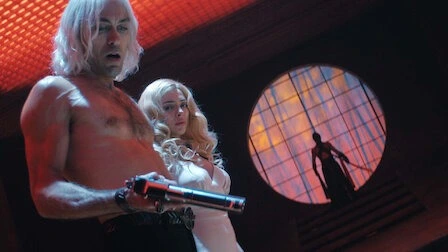
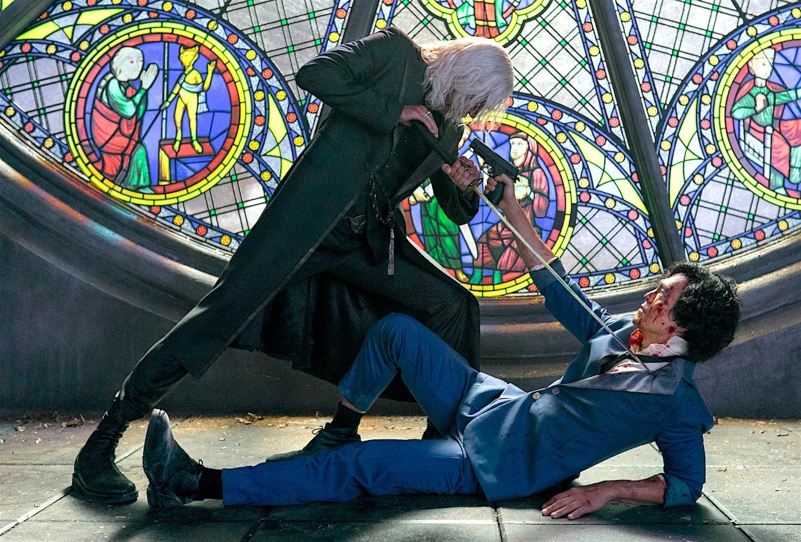

Vicious

Interpretado por Alex Hassell
Vicious es un hombre misterioso y peligroso con una conexión pasada con Spike Spiegel. Ambos eran miembros de una organización criminal llamada los Dragones Rojos, pero sus caminos se separaron en circunstancias no del todo claras. Vicious es conocido por su brutalidad, astucia y habilidades letales en combate. Su presencia en la serie agrega una capa adicional de complejidad a la historia de Spike.
Vicious y Spike comparten un pasado en los Dragones Rojos, pero su relación es complicada. Aunque en un momento fueron camaradas y compañeros cercanos, algo sucedió que llevó a una ruptura entre ellos. La trama de "Cowboy Bebop" explora gradualmente la historia entre Spike y Vicious, revelando eventos traumáticos y decisiones que influyeron en sus destinos.
 